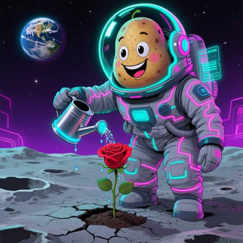

Grammar — A potato astronaut in a spacesuit is watering a rose plant on the moon
A potato astronaut in a spacesuit is watering a rose plant on the moon. It looks happy, Cyberpunk style.


Judge — Direct
- PASSGrammar - Pronoun Reference — The potato astronaut has a wide smile, rosy cheeks, and cheerful eyes, visually conveying a happy expression. The pronoun 'It' in 'It looks happy' refers to the potato astronaut, and this attribute is successfully depicted.
- FAILStyle — The image does not exhibit a Cyberpunk style. While there are some neon blue lights on the astronaut's backpack, the overall aesthetic is bright, clean, and cute, lacking the characteristic gritty, dystopian, high-tech, low-life urban elements of the Cyberpunk genre. The style is more akin to a cute, sci-fi illustration.
Judge — Continuum
- PASSGrammar - Pronoun Reference — The pronoun 'It' in the prompt refers to the 'potato astronaut'. The image depicts the potato character with large, round eyes and a wide, open-mouthed smile, which clearly conveys a happy expression.
- PASSStyle — The image incorporates elements of the Cyberpunk style. The spacesuit worn by the potato astronaut is decorated with glowing neon lines in bright pink and cyan. The helmet has a glowing cyan ring, and there are illuminated panels on the suit's chest and backpack, consistent with a futuristic, high-tech aesthetic often found in cyberpunk art.
What the agent did
Thinking
The user wants an image: a potato astronaut in a spacesuit watering a rose plant on the moon, happy, cyberpunk style. I need to generate with qwen-image model. Let me create a detailed visual prompt. Key elements: - Potato character (anthropomorphic potato) as astronaut in spacesuit - Watering a rose plant (watering can presumably) - On the moon (lunar surface, craters, Earth maybe in sky) - Happy expression - Cyberpunk style (neon colors, glowing accents, high-tech details, vibrant pinks/cyans/purples) Let me generate.
Model
I'll generate this fun cyberpunk scene — a happy potato astronaut watering a rose on the moon.
Step 1 — `generate_image`
{
"prompt": "Cyberpunk style illustration: a cheerful anthropomorphic potato astronaut in a bulky high-tech spacesuit with glowing neon cyan and magenta circuit lines, glass helmet dome revealing the potato's happy smiling face with big joyful eyes, watering a single red rose plant growing in cracked grey lunar soil using a futuristic metal watering can with glowing blue LED accents, droplets of water falling onto the rose, lunar surface with craters, Earth visible in the dark starry sky, neon purple and teal rim lighting, holographic HUD elements on the suit, vibrant cyberpunk color palette, detailed digital art",
"model": "qwen-image"
}Result img_0
Thinking
Let me inspect this image. The generated image shows: - A potato astronaut with a happy smiling face ✓ - In a spacesuit with neon cyan and magenta glowing lines (cyberpunk style) ✓ - Watering a red rose plant with a metal watering can ✓ - Water droplets falling onto the rose ✓ - Lunar surface with craters ✓ - Earth in the starry sky ✓ - Cyberpunk style with neon purple background ✓ This looks excellent! All elements are present: 1. Potato astronaut ✓ 2. Spacesuit ✓ 3. Watering a rose plant ✓ 4. On the moon ✓ 5. Happy expression ✓ 6. Cyberpunk style ✓ The composition is good, the character is clearly a potato with a happy face, the rose is red and being watered, the moon surface is visible, and the neon cyberpunk aesthetic is strong. This is essentially perfect on the first generation. I should mark it as best and stop — good enough is a stop condition.
Step 2 — `mark_best`
{
"image": "img_0",
"reason": "All requested elements are present and correct: happy potato astronaut in a neon-lit spacesuit, watering a red rose on the moon, strong cyberpunk aesthetic. No flaws to fix."
}Thinking
The image is complete and matches everything the user asked for. Good enough is a stop condition. I'll wrap up.
Model
Your image is ready! 🥔🚀🌹 The scene includes everything you asked for: - **Potato astronaut** — a cheerful potato with a big smile and rosy cheeks inside a glass helmet dome - **Spacesuit** — bulky and detailed, traced with glowing neon cyan and magenta circuit lines - **Watering a rose** — a metallic futuristic watering can pouring glowing droplets onto a vivid red rose growing from cracked lunar soil - **On the moon** — cratered grey surface with Earth hanging in the starry sky - **Cyberpunk style** — neon purple atmosphere, holographic HUD panels, and vibrant rim lighting throughout The first generation nailed it, so I've marked it as the final result.